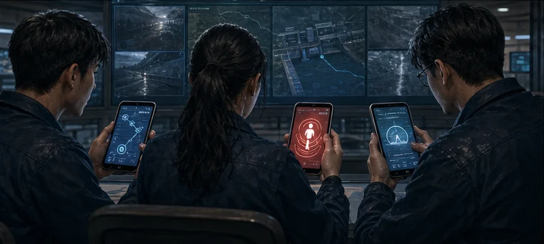
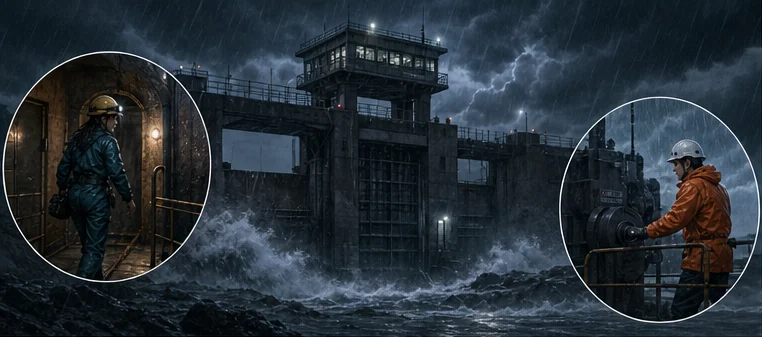
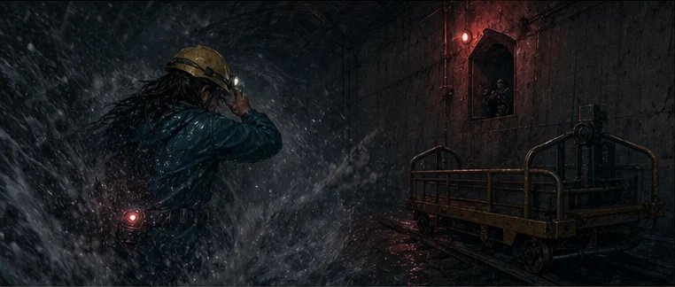
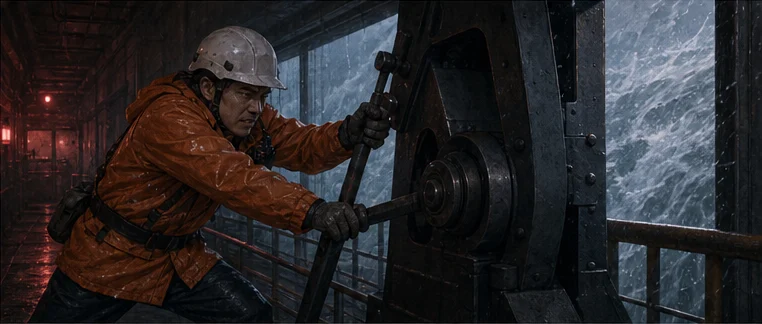
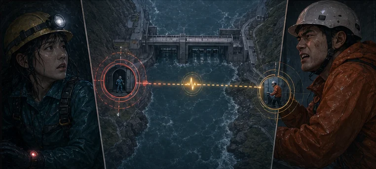

共同序章｜海岬防洪站
你們接手了一座失去主系統的防洪站
主電力與中央遙測中斷。三位應變人員接上不同備援鏈路；你們要把查到的事交換清楚，再一起做出現場決定。
三人同室、一人一機、各選不同角色。每個人查到的事都要說給隊友聽。
開始分配角色
現場播報
岬衛-7
它會把已接通的資料告訴你們；現在要做的，是分配角色、查一件事，再把發現帶回隊伍。
共同序章｜六格現場
先知道你們接手了什麼
三人一起看完，再各自打開一支角色連結。

18:40｜人員就位
林芮進入西側維修隧道；高承在東閘檢查手動撐架。主系統正常。

18:47｜進水管破裂
海水衝入設施，主電力與中央遙測同時失效。

西側｜林芮失聯
穿戴頻道仍有回傳，但時間、位置與路線都未確認。

東閘｜高承留守
他必須守住手動撐點，控制廊才能維持隔離。
18:48｜你們接手
三支手機接到同一場事件，各自保管一種查詢能力。

每人查一件事
六個未知只能查三個。先和隊友說好，再開始查詢。
現在開始｜三人一場事件
把三支角色連結分給隊友
三條連結屬於同一場事件。請三人各選不同角色，查到什麼就交換什麼。
建議：三人同室、一人一機、各自開啟不同角色；語音若開啟，建議只一支手機播放，字幕在每支手機都會顯示。
遇到問題？查看事件資訊
只有在角色連結對不上時才需要查看。一般遊玩不需要知道這串識別碼。
開啟後顯示